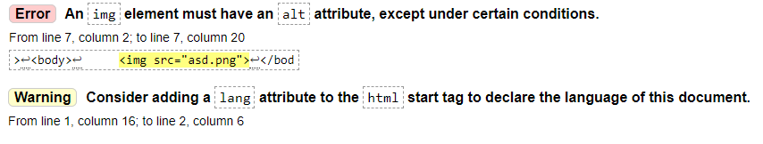
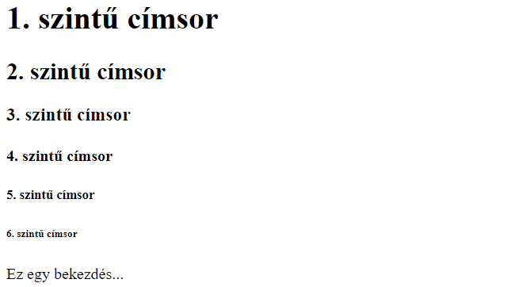
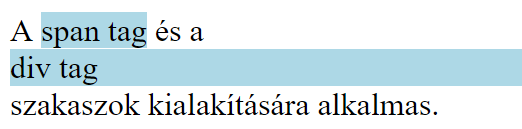

1. gyakorlat¶
A gyakorlat anyaga¶
A követelmények ismertetése.
Ezen a gyakorlaton röviden áttekintjük a kurzuson tárgyalt három nyelv (HTML, CSS és PHP) általános szerepét a webfejlesztésben. Ezt követően megismerkedünk a HTML nyelv néhány alapvető elemével.
Áttekintés¶
A félév során a HTML, CSS és PHP nyelvekkel fogunk megismerkedni. Az alábbi táblázatban röviden összefoglaljuk ezeknek a nyelveknek az általános szerepét a webfejlesztésben.
| HTML | CSS | PHP | |
|---|---|---|---|
| Micsoda? | jelölőnyelv | stílusleíró nyelv | szerveroldali szkriptnyelv |
| Szerepe | weboldalak tartalmának kialakítása, a tartalom strukturálása | weboldalak tartalmának formázása | tartalom dinamikus generálása, űrlapfeldolgozás, adatbázis-kezelés, menetkövetés, fájlkezelés, OOP, ... |
HTML alapok (1. rész)¶
Bevezetés¶
A HTML (HyperText Markup Language) egy leíró nyelv, aminek segítségével megmondhatjuk, hogy mi az, amit egy weboldalon látni szeretnénk (pl. szövegek, képek, hivatkozások, táblázatok, multimédia elemek).
A weboldal tartalmát lehetőségünk van strukturálni is HTML-ben, különböző szakaszok, tartalmi egységek kialakításával (pl. fejléc, menüsor, fő tartalom, lábléc).
A HTML kód írása roppant egyszerű:
- A kódot tetszőleges szerkesztőprogramba írjuk (pl. Gedit, Notepad++, WebStorm stb.)
- Az állományt
.htmlkiterjesztéssel mentjük el - Végül a fájlt megnyitjuk egy szimpatikus böngészővel, és már láthatjuk is az eredményt.
Megjegyzés
A HTML kódot más-más böngészők (illetve böngészőverziók) eltérő módon jeleníthetik meg.
Szabványok¶
A weboldalak készítésére vonatkozóan a W3C (World Wide Web Consortium) ad ki előírásokat, szabványokat.
Fontosabb HTML szabványok:
-
HTML 4.01 (1999)
-
XHTML 1.0 Strict (2000)
- a korábbi HTML 4 szabvány "újraírása" XML alapokon
- szigorú szabályok jellemzik
- HTML dokumentumok egységessé tétele, egyszerűbb feldolgozás programmal
-
HTML5 (2014)
- kevésbé szigorú az XHTML 1.0 Strict-hez képest
- programmal valamelyest nehezebb feldolgozni
- számos újdonságot tartalmaz elődjeihez képest (pl. szemantikus elemek, multimédia, grafikus elemek, új űrlapmező típusok).
A gyakorlaton a HTML5 és CSS3 szabványokkal fogunk foglalkozni. A webfejlesztés során érdemes törekednünk a választott szabvány előírásainak betartására!
Szabványosság ellenőrzése¶
A weboldalunk szabványosságát legegyszerűbben böngésző plug-inek vagy az alábbi online validator szoftverek segítségével ellenőrizhetjük:
Tipp
A beadandó projekt szabványosságát a fenti eszközökkel egyszerűen ellenőrizhetitek.
Az érvényesíteni kívánt fájl feltöltése után, amennyiben nem szabványos az általunk írt kód, a validator különböző megjegyzéseket bocsát a rendelkezésünkre:
- A piros hátterű
Error-ok komolyabb validálási hibákat jelentenek, amiket mindenképpen javítanunk kell. A hibaüzenetből egy kis angol tudással egyszerűen rájöhetünk a problémára (ha esetleg nem jöttök rá, nyugodtan kérdezzétek a gyakorlatvezetőtöket). - A sárga hátterű
Warning-ok kevésbé súlyos figyelmeztetések, amelyek általában megfontolandóak. Ezeknek a maradéktalan kijavítása viszont nem elvárt ezen a kurzuson.
Példa: Egy validator által jelzett validálási hiba és figyelmeztetés

Alapfogalmak¶
Tagek¶
A HTML fájlok alapvető elemei a tagek. Ezek < és > közé írt, speciális jelentéssel bíró HTML objektumok. A HTML nyelv egy előre definiált tagkészlettel rendelkezik.
A legtöbb HTML tag páros tag, ami azt jelenti, hogy egy nyitótagből és egy zárótagből áll. A zárótaget úgy képezzük a nyitótagből, hogy a tag neve elé, azaz közvetlenül a < után egy perjelet teszünk.
1 | |
Vannak viszont páratlan tagek (másnéven üres tagek) is, amelyek csak nyitótagből állnak. Ilyen például a sortörés beszúrására alkalmas <br> tag.
1 | |
A páratlan tagek végére opcionálisan egy perjelet is tehetünk (tehát például <br> helyett azt is írhatjuk, hogy <br/>). Ebben a jegyzetben minden páratlan tag esetén kitesszük ezt a perjelet, noha ez HTML5-ben elhagyható.
A HTML tageket egymásba ágyazhatjuk. Ekkor fontos, hogy az egymásba ágyazott tageket belülről kifelé haladva kell lezárnunk.
Példa: Tagek egymásba ágyazása - először lezárjuk a legbelső <a> taget, majd az őt beágyazó <p> taget, végül pedig a legkülső <div> taget
1 | |
Attribútumok¶
A tagekhez tartozhatnak bizonyos speciális tulajdonságok, úgynevezett attribútumok, amelyekhez speciális értékeket rendelhetünk.
A tagekhez tartozó attribútum-érték párokat a nyitótag neve után írjuk, szóközzel elválasztva.
Példa: Egy páros <a> tag, amely a href és target attribútumokkal rendelkezik
1 | |
Példa: Egy páratlan <img> tag, amely az src, alt és width attribútumokkal rendelkezik
1 | |
A HTML dokumentum felépítése¶
Minden HTML dokumentumunk megírása az alábbi kóddal kezdődik:
1 2 3 4 5 6 7 8 9 10 | |
Tipp
A fenti (vagy ahhoz hasonló) alap HTML kódot néhány szerkesztőprogrammal le is generáltathatjuk:
- A WebStorm automatikusan generálja a kódot HTML fájlok esetén
- Sublime Text Editorban legépeljük, hogy
html, majd közvetlen utána nyomunk egy Tab-ot - Visual Studio Code-ban leírunk egy felkiáltójelet (
!), majd közvetlen utána nyomunk egy Tab-ot
Nézzük meg, hogy mi mit is jelent a kódban!
<!DOCTYPE html>: megmondjuk, hogy a HTML5 szabvány szerint írtuk a kódot<html>...</html>: ez írja le magát a weboldalt- a
langattribútummal megadhatjuk a weboldal tartalmának nyelvét
- a
<head>...</head>: fejrész - az oldalon nem megjelenő tartalom (metainformációk), fájlcsatolások, CSS- és szkriptbeágyazások helye<title>...</title>: a böngészőfülön megjelenő cím<meta charset="UTF-8"/>: UTF-8 karakterkódolás beállítása
<body>...</body>: törzsrész - a megjelenő tartalom, strukturális elemek és szkriptek helye
Kommentek¶
A HTML fájlokba lehetőségünk van kommenteket (megjegyzéseket) írni az alábbi szintaxissal:
1 | |
A kommentek szövege a weboldalon természetesen nem jelenik meg, viszont a HTML forráskódban (amit a Ctrl+Shift+I billentyűkombinációval egyszerűen megtekinthetünk) láthatóak lesznek az általunk írt kommentek.
A head fontosabb tagjei¶
Az alábbiakban felsoroljuk a HTML dokumentum fejrészében (<head> és </head>) között használatos fontosabb tageket.
<title>...</title>: a böngészőfülön megjelenő cím (ezt mindig adjuk meg!)<meta charset="UTF-8"/>: UTF-8 karakterkódolás beállítása (ezt mindig adjuk meg!)<meta name="author" content="Gipsz Jakab"/>: a weboldal szerzője<meta name="description" content="Jakab blogoldala"/>: a weboldal leírása<meta name="keywords" content="webtervezés,webterv,HTML,CSS,PHP"/>: kulcsszavak megadása (célja a találati esélyeink javítása)<link rel="stylesheet" href="valami.css"/>: külső CSS fájl beágyazása<style>...</style>: CSS formázás beszúrása<script>...</script>: szkript (pl. JavaScript) beszúrása
A body fontosabb tagjei¶
Az alábbiakban megismerkedünk a HTML dokumentum törzsrészében (<body> és </body> között) használható néhány fontosabb taggel.
Bekezdések, címsorok¶
<p>...</p>: bekezdés<h1>...</h1>: 1. szintű címsor (legfontosabb)<h2>...</h2>: 2. szintű címsor<h3>...</h3>: 3. szintű címsor<h4>...</h4>: 4. szintű címsor<h5>...</h5>: 5. szintű címsor<h6>...</h6>: 6. szintű címsor (legkevésbé fontos)
1 2 3 4 5 6 7 8 9 10 11 12 13 14 15 16 | |
A fenti HTML kódot tartalmazó fájlt böngészőben megnyitva a következőt kapjuk:

Karakterentitások¶
Mivel a HTML-ben vannak speciális célt szolgáló karakterek (pl. a < és a > karakterek), ezért ezeket valahogy máshogy kell írnunk, ha meg szeretnénk őket jeleníteni a weboldalunkon. Az ilyen karakterek tárolására használjuk a karakterentitásokat.
Néhány gyakran használt karakterentitás (teljes lista itt):
| Karakterentitás | Megjelenítés | Elnevezés |
|---|---|---|
nbsp; |
szóköz | |
< |
< | kisebb mint |
> |
> | nagyobb mint |
& |
& | és-jel |
apos; |
' | aposztróf |
" |
" | idézőjel |
© |
© | copyright |
Példa: Ha egy bekezdésbe azt szeretnénk írni, hogy 5 < 10 > 8, akkor azt a következőképpen tehetjük meg karakterentitások használatával
1 | |
Képek¶
Ha a weboldalunkra egy képet szeretnénk beszúrni, akkor ezt az <img/> nevű páratlan taggel tudjuk megtenni. A tag fontosabb attribútumai:
src: a kép elérési útvonala (kötelező megadni)alt: helyettesítő szöveg, ha a kép nem jelenik meg (kötelező megadni)title: a kép címe, ami akkor jelenik meg, ha a kurzor a kép fölött állwidth: a kép szélessége (pixelben)height: a kép magassága (pixelben).
Ha a width és height attribútumok közül csak az egyiket adjuk meg, akkor a másik a kép eredeti méretarányaiból számolódik. Tehát például ha egy 400x300-as (400 pixel széles, 300 pixel magas) kép szélességét 800 pixelre állítjuk (megduplázzuk), akkor a magassága automatikusan 600 pixel lesz.
Példa: A HTML fájllal egy mappában van egy img mappa, amiben található a cat.jpg kép. Szúrjuk be a képet a weboldalunkra úgy, hogy a szélessége 400 pixel legyen!
1 2 3 4 5 6 7 8 9 10 | |
Az id és class attribútumok¶
Minden HTML objektumnak adható egyedi azonosító, illetve minden HTML objektum csoportosítható osztályokba. Ezek CSS-ben lesznek majd hasznosak, amikor egy-egy objektumra vagy objektumok csoportjára szeretnénk hivatkozni.
Az egyedi azonosító (id) értéke a dokumentumon belül egyedi kell, hogy legyen. Emellett az attribútum értéke nem tartalmazhat szóközt.
Az osztály (class) értéke nem kell, hogy egyedi legyen (sőt általában nem az). Értékéül szóközzel elválasztva megadható több osztály neve is, amihez az adott elem tartozik.
Példa: id és class attribútumok használata
1 2 3 4 5 6 7 8 9 10 11 12 13 14 | |
Hivatkozások (Linkek)¶
Hivatkozásokat (avagy linkeket) az <a>...</a> páros tag segítségével szúrhatunk be a weboldalunkra. A tag fontosabb attribútumai:
href: cél, ahova a hivatkozásra kattintva jutunk- lehet egy másik weboldal - pl.
<a href="https://www.google.com">Google</a> - lehet egy másik fájl - pl.
<a href="bevasarlolista.txt">Bevásárlólista</a> - lehet lapon belüli hivatkozás - pl.
<a href="#top">Vissza a tetejére</a>(ez azid="top"attribútummal rendelkező elemre mutat)
- lehet egy másik weboldal - pl.
target: hol legyen megnyitva a hivatkozott cél_self: ugyanott, ahol rákattintottunk (alapértelmezett)_blank: új lapon vagy ablakban
title: hivatkozás címe, ami akkor jelenik meg, ha a kurzor a hivatkozás fölött áll.
Példa: Hivatkozások beszúrása
1 2 3 4 5 6 7 8 9 10 11 12 13 14 15 16 17 18 19 20 21 | |
Szakaszok¶
HTML-ben lehetőségünk van a weboldal tartalmának strukturálására is. Ezt szakaszok, tartalmi egységek kialakításával tehetjük meg.
A <div>...</div> általános célú blokkszintű (block) szakasz. A blokkszintű elemek mindig új sorban kezdődnek, és kihasználják a rendelkezésre álló szélességet.
A <span>...</span> átalános célú sorszintű (inline) szakasz. A sorszintű elemek nem kezdődnek új sorban, illetve szélességük csak akkora, mint amekkora helyre szükségük van.
Példa: A <span> és <div> tagek használata
1 2 3 4 5 6 7 8 9 10 | |

Gyakorló feladat¶
Készíts egy egyszerű weboldalt, amin bemutatod saját magadat (vagy a kedvenc filmedet, a hobbidat stb.)! Az oldal tartalmazza az alábbi elemeket:
- címsorok
- bekezdések
- képek
- hivatkozások
- tartalmi egységek (szakaszok)!